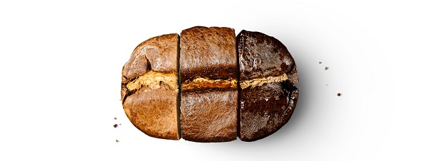

“从一棵咖啡树到出产出可收获的咖啡果大约需要五年时间，每一棵树每年只出产相当于一磅的烘焙咖啡豆。”
咖啡原豆要放在一个旋转式大圆桶里进行烘焙，然后它们开始转变。经过5到7分钟猛火高热后，咖啡豆中的水分逐步挥发。此时，咖啡豆开始变黄，并产生浓郁的香味。 8分钟之后，“第一次爆裂”开始，咖啡豆的体积膨胀一倍，并且发出噼里啪啦的响声。这时，它们的颜色是浅褐色的。如果你在此时停止加热，取出几粒咖啡豆尝尝滋味，你会对咖啡豆的滋味感到失望，这时的咖啡豆只有非常强的酸味，因为此时咖啡豆丰富、复杂的味道还没有散发出来。
在容器里烘焙10到11分钟之后，咖啡豆的颜色变得越来越深，表面开始浮现出油。此刻的烘焙阶段（根据咖啡的种类而定，通常在11或15分钟），咖啡豆的浓郁风味就开始完全释放，并与咖啡豆自己的特别滋味完美融合。